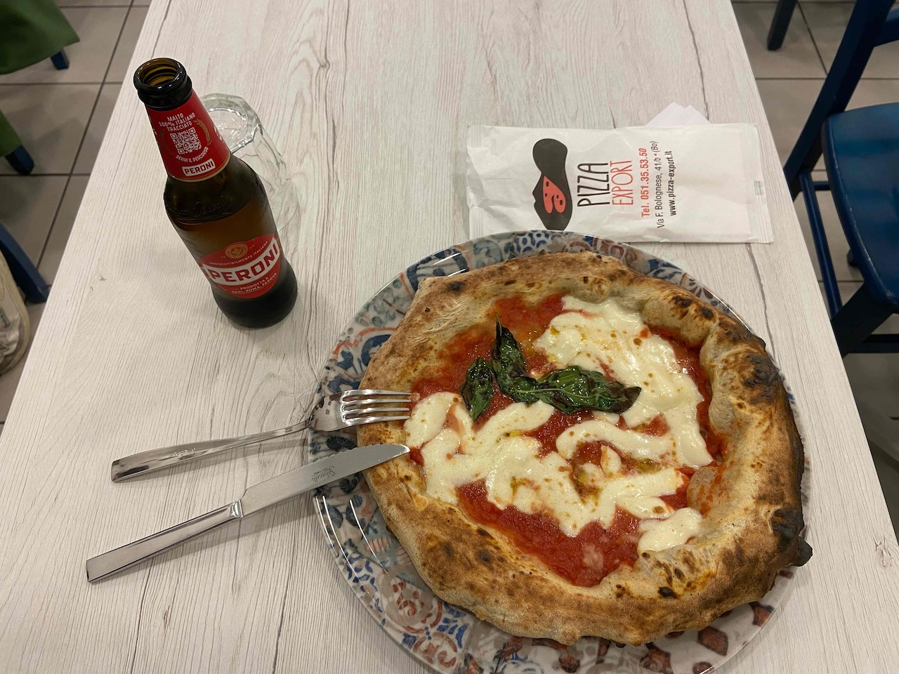
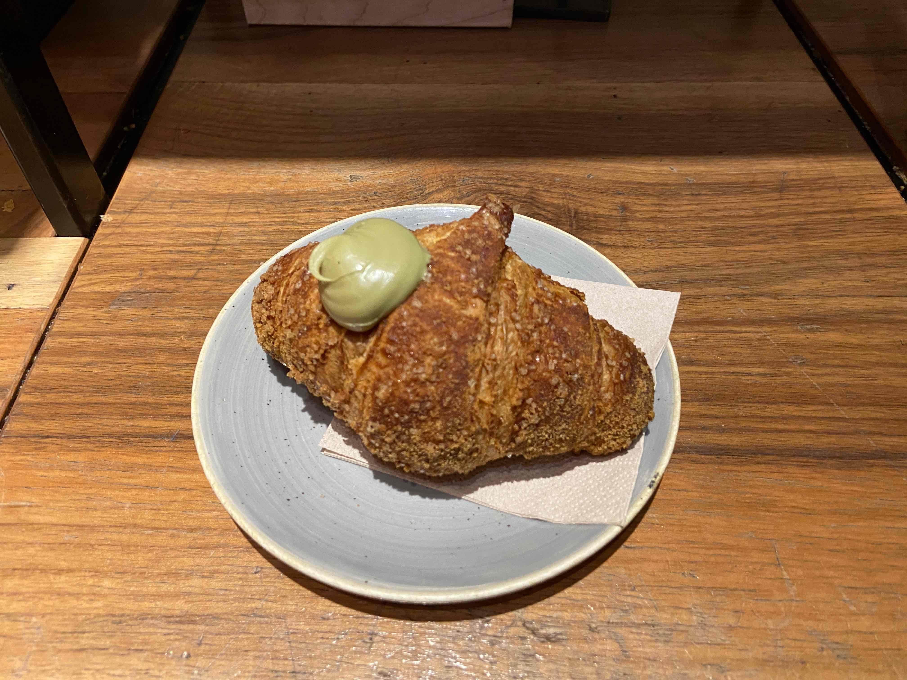
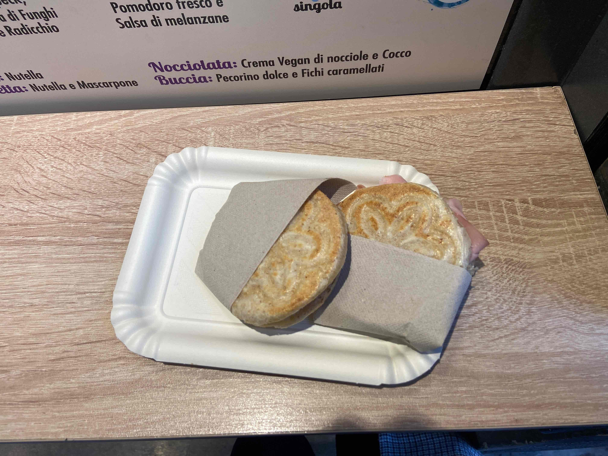
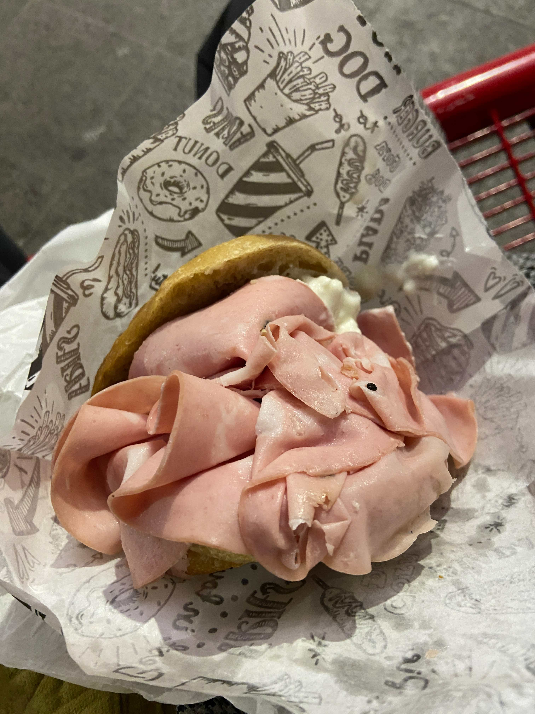
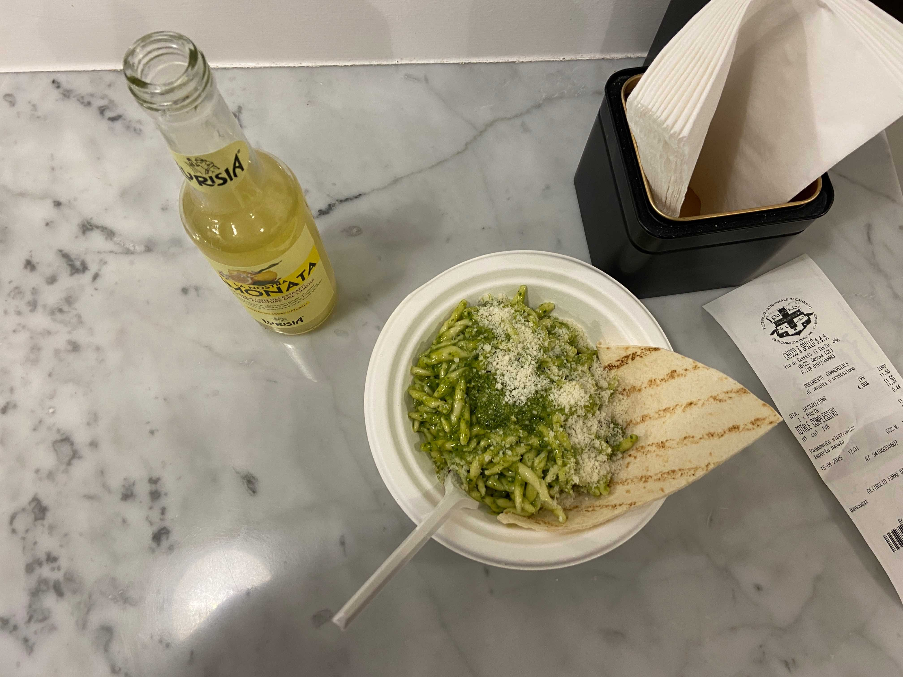
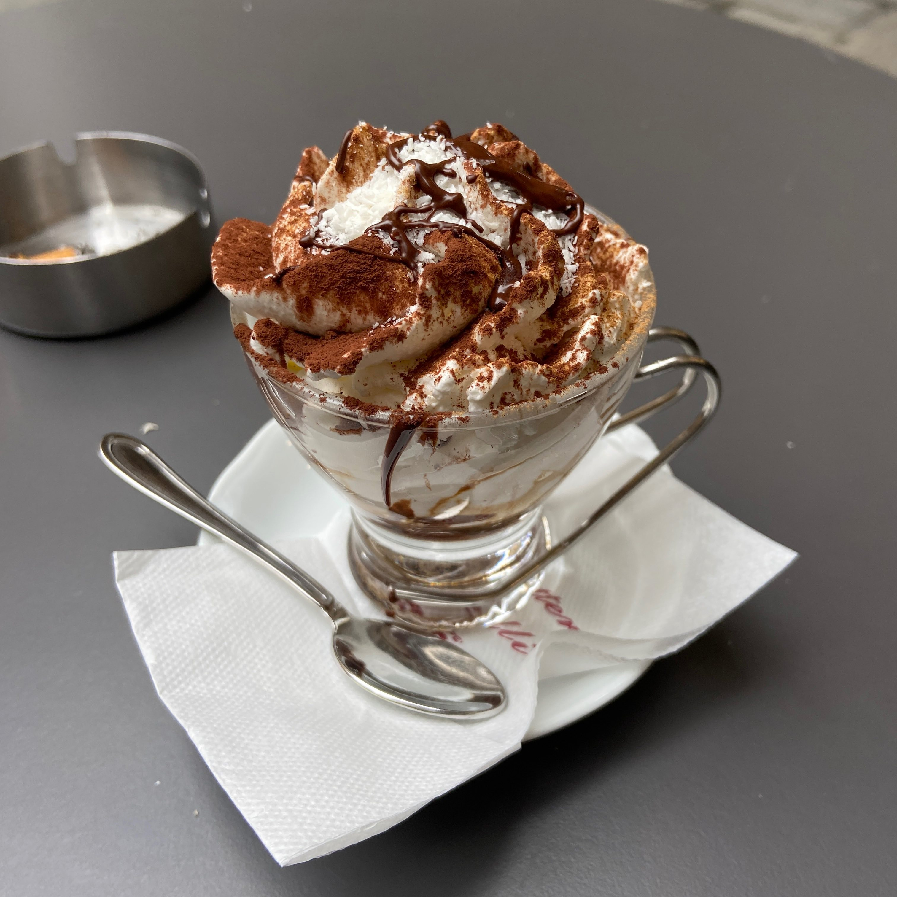

Bologna and Genoa
ボローニャとジェノヴァ
One of my main goals for this trip was to find and eat local foods.
I was able to find many great local dishes, and both cities were incredibly beautiful and wonderful.
この旅行の最大の目的の一つは、地元の食べ物を見つけて食べることでした。
素晴らしい郷土料理をたくさん見つけることができましたし、どちらの都市も美しくて素晴らしい場所でした。
為替レート
現在の為替レートは、1ユーロ = 円 (時点) です。
ユーロ = 円
Itinerary
旅程
| 13. Apr |  |
Salzburg → Bologna (Bus) |
|---|---|---|
 |
||
 |
Sightseeing in Bologna | |
| 14. Apr | |
Sightseeing in Bologna |
|
||
|
Bologna → Genoa (Bus) | |
| 15. Apr | |
Sightseeing in Genoa |
|
||
|
Genoa → Bologna → Salzburg (Bus) |
Bologna
ボローニャ
Bologna is the capital of the Emilia-Romagna region in Italy.
It is known as a student city and is also the birthplace of foods like Bolognese sauce and lasagna.
ボローニャはイタリアのエミリア・ロマーニャ州の州都です。
学生の街として知られており、ボロネーゼソースやラザニアなどの料理の発祥の地でもあります。

マルゲリータピザとビール
📍 Pizza Export
Surprisingly, this Margherita pizza cost only 6€!
This pizzeria is located near the main station. The taste of the pizza was simple and good, with a nice sourness from the tomato sauce. The prices for food and drinks are very affordable. I ordered a pizza, a beer, and an espresso, and the total was only about 9€!
驚いたことに、このマルゲリータピザはたったの6ユーロでした！
このピザ屋は中央駅の近くにあります。ピザの味はシンプルで美味しく、トマトソースの酸味が良かったです。食べ物と飲み物の価格は非常に手頃です。私はピザ、ビール、エスプレッソを注文しましたが、合計でたったの9ユーロほどでした！

ピスタチオクリームのコルネット
📍 In the old town of Bologna
I decided to try this café because I saw a queue of people on the street. The café had a good atmosphere, and the cornetto was worth the wait.
Unlike a traditional cornetto with powdered sugar on top, this one had crystal sugar. The crystal sugar added a nice textural accent. Even though it's not traditional, I actually liked it very much.
通りに人が並んでいるのを見て、このカフェに入ってみることにしました。カフェは雰囲気が良く、コルネットは待つ価値がありました。
粉砂糖がかかった伝統的なコルネットとは違い、これにはザラメがかかっていました。このザラメが食感の良いアクセントになっていました。伝統的ではありませんが、私はこれがとても気に入りました。

ティジェッレ
📍 Tigellino
Tigelle is a traditional bread from the Emilia-Romagna region. It is usually tiny and round, and is served filled with ingredients like cheese and ham.
I had one with mortadella (a traditional ham from Bologna) and another with caprese. Both tasted great and were very light, and the tigelle were slightly crispy.
Two pieces were actually not enough. Tigelle are much smaller than you might think! If you want to have this for lunch, I suggest ordering at least three.
ティジェッレはエミリア・ロマーニャ州の伝統的なパンです。通常は小さくて丸い形をしており、チーズやハムなどを挟んで食べます。
私はモルタデッラ（ボローニャの伝統的なハム）を挟んだものと、カプレーゼを挟んだものを食べました。どちらも美味しく、とても軽くて、ティジェッレは少しサクサクしていました。
実は2つでは足りませんでした。ティジェッレは思っているよりずっと小さいです！昼食として食べるなら、少なくとも3つは注文することをおすすめします。

モルタデッラのサンドイッチ
📍 Murtadela
It’s more like a pile of mortadella with bread on top...
But anyway, this sandwich was really great and tasty. If you want to eat a ton of mortadella, this is the best place for you. The shop is also open late, so you can grab one after the supermarkets are closed.
パンにモルタデッラが乗っているというより、モルタデッラの山にパンが乗っているような感じです…
でもとにかく、このサンドイッチは本当に素晴らしくて美味しかったです。たくさんのモルタデッラを食べたいなら、ここは最高です。この店は夜遅くまで開いているので、スーパーが閉まった後でも買うことができます。
Genoa
ジェノヴァ
Genoa is one of the largest coastal cities in northern Italy.
Although it is not as famous as a tourist destination, Genoa is the birthplace of a very famous food: pesto sauce!
In Genoa, pesto is typically served with trofie, a short twisted pasta.
ジェノヴァは北イタリアで最大級の港町の一つです。
観光地としてはそれほど有名ではありませんが、ジェノヴァは非常に有名な食べ物であるペストソース（ジェノベーゼ）の発祥の地です！
ジェノヴァでは、ペストは通常「トロフィエ」という短いねじれたパスタと一緒に提供されます。

トロフィエ・アル・ペスト
📍 Pastificio Artigianale di Canneto
In Italian, “pastificio” means a shop that sells pasta, or a pasta factory. This means the place isn’t a restaurant, but more like a homemade pasta shop where you can also eat.
The inside of the shop was small, but the pasta was very affordable and the taste was magnificent. A medium portion of trofie cost only about 8€.
The pesto sauce had a strong garlic flavor and really highlighted the quality of the ingredients. The trofie was some of the best I've ever eaten. I want to visit again, and next time I’ll definitely buy some pasta from the shop to take home.
イタリア語で「パスティフィーチョ」とは、パスタを売る店やパスタ工場を意味します。つまりここはレストランではなく、パスタを食べることもできる自家製パスタの店といった感じです。
店内は狭かったですが、パスタの価格は非常に手頃で、味は絶品でした。中サイズのトロフィエはたったの8ユーロほどでした。
ペストソースはニンニクの風味が強く、素材の良さが引き立っていました。トロフィエは私が今まで食べた中で最高のパスタの一つでした。またここを訪れたいです。次回は必ず店でパスタを買って帰りたいと思います。

クリームを乗せたエスプレッソ
📍 In the old town of Genoa
I usually walk a lot when I'm sightseeing in a city. I needed a little break, and I found a café in the old town offering a delicious-looking coffee topped with whipped cream.
I don't know what it is called in Italy, but this one was sweet and balanced nicely with the bitterness of the espresso.
It’s the perfect drink for a short break when you get tired of walking.
私は街を観光する時、たいていよく歩きます。少し休憩が必要だったとき、旧市街でホイップクリームが乗った美味しそうなコーヒーを出しているカフェを見つけました。
イタリアで何と呼ばれているかは分かりませんが、これは甘く、エスプレッソの苦味と良いバランスが取れていました。
歩き疲れた時の短い休憩にはぴったりの飲み物です。